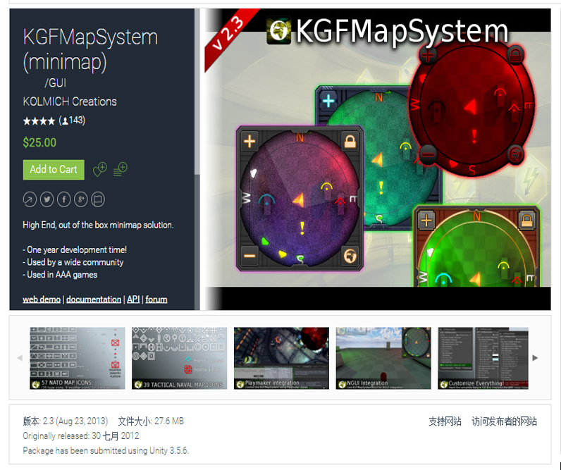

详情页
KGFMapSystem,在我们开发游戏或者虚拟现实中，一般都会用到小地图，如果要我们去写小地图，应该会花费一点时间的吧，如何加快我们的开发速度呢，其实在unity 3d中就有一个“小”插件，是专门用开开发小地图用的，这个插件就是KGFMapSystem。
下载链接
http://www.kolmich.at/documentation/
插件教程
https://blog.csdn.net/q764424567/article/details/78605552
KGFMapSystem,在我们开发游戏或者虚拟现实中，一般都会用到小地图，如果要我们去写小地图，应该会花费一点时间的吧，如何加快我们的开发速度呢，其实在unity 3d中就有一个“小”插件，是专门用开开发小地图用的，这个插件就是KGFMapSystem。